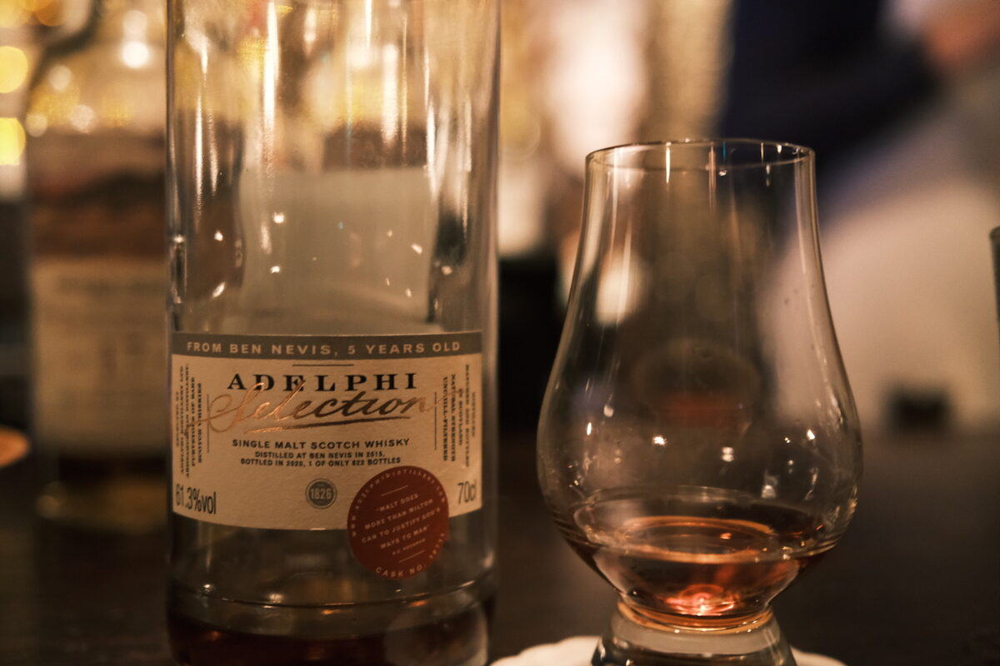

Ben Nevis 2015 Adelphi 5 years 61.3% (first fill sherry)
Adelphi! I got the email for this outturn at ten in the morning, I believe. Three minutes later, this was sold out (alongside most of the other bottles in this outturn). Oh well, c’est la vie. The people love the colour. Judging by the number of bottles (622), probably a sherry butt.
Colour Deep ruby. I guess we know what to expect.
Nose Sherry. Dirty and oily, mint and menthol. Dried fruits and walnuts. Fresh oak. Herbaceous. Heady and alcoholic, but not unpleasant. Perfume. Toffee apples. Pears. Cough syrup. Minty. Lilly pilly.
Palate Oily Bennie smack. Dried fruits, figs and raisins. A little ashy, before moving into dried apricots and more figs. Coco pops, raisin bran, and honey granola. Candied macadamias. Boiled sweets and vanilla. Cola.
Finish Mulled wine. Cinnamon and chilli. Raisins, sultanas, PX. Thick and heavy. Molasses, very long.
Comments Real classic Adelphi sherry bomb. Young Bennie is great stuff. 87/100.

Posted by Dominic on 02 May 2021